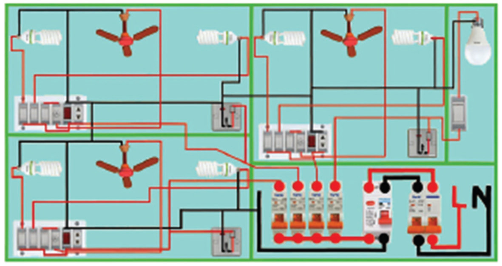
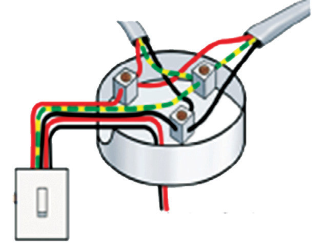

In the distribution box, there are lighting fuses and power fuses. For example, there are separate fuses for lighting in corridors, bedrooms, the living room and the kitchen. Most houses have light fuses rated 5 A and fuses for power sockets usually rated 15 A. Hence, cables for power points are different from those for lights. Lighting circuits control the lighting fixtures in a house. Unlike the ring circuit, the lighting circuit does not form a loop returning to the consumer unit. Instead, the consumer unit is normally connected to the first lamp, which in turn is connected to the second lamp, and so on. There are two types of lighting circuits: loop-in lighting circuits and junction box lighting circuits.
In the loop-in lighting circuit, the live, neutral, and earth wires run from the consumer unit to each of the ceiling designs, one after the other. From each rose, another set of wires runs to the switch, which operates the light. Figure 2.50 illustrates the loop-in circuit.

In the junction box lighting circuit, neutral and earth wires run to one junction box after another. From the junction box, one wire runs to the light and the other runs to the switch for that light. Figure 2.51 illustrates the junction box lighting circuit.